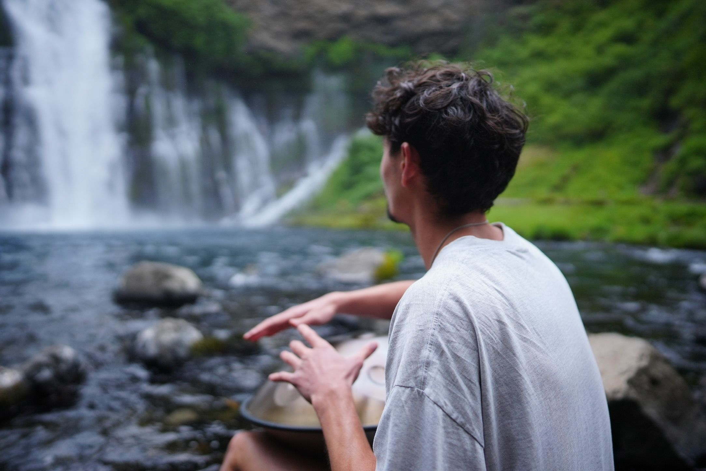
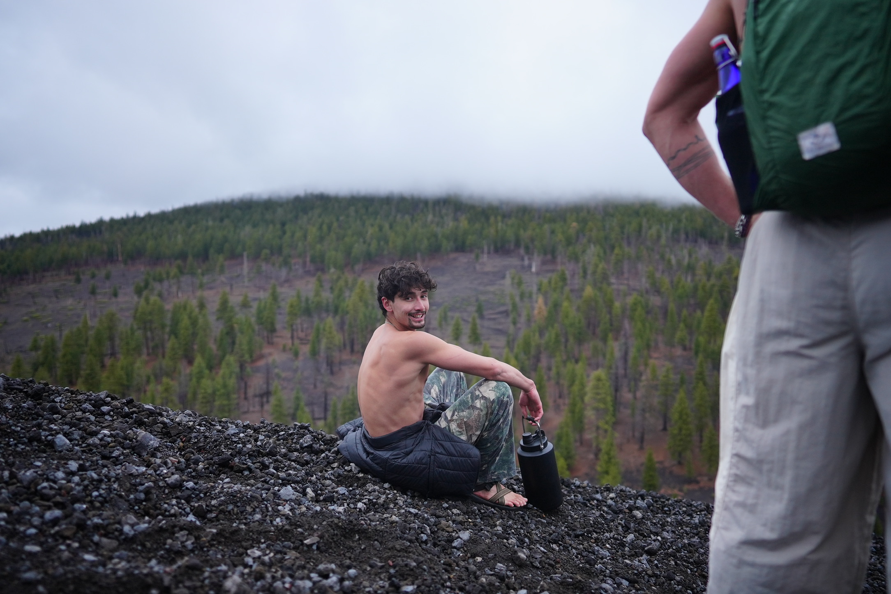

Academic
- Finish my neuroscience B.S. with research honors.
- Prepare for and take the MCAT.
- Submit a strong medical school application.

Portfolio
Neuroscience & premed student building at the meeting point of medicine, technology, and contemplative practice.
See my workAbout
Hi, I'm Hadi. I'm a neuroscience student on the premed track, and most of what I care about lives somewhere between medicine, technology, and the inner life.
Right now intern in a lab at Northwestern studying Tibetan dream yoga; I look at how these old contemplative practices affect things like cognitive flexibility, how awake and aware people feel during the day, and their broader sense of well-being. It's a strange and wonderful place to spend time, right where meditation traditions and modern neuroscience actually have something to say to each other.
That belief, that old practice and new science are partners rather than rivals, runs through everything else I make. I'm trained as an insomnia coach, using ACT-based methods. I also started Medicineyourway (it used to be called medicine2.0), which grew out of a simple hope: that understanding medical information and making decisions about care could be more accessible and less expensive for physicians and patients alike.
When I get to medicine, I want to help tilt it toward prevention and lifestyle: pairing the technological miracles of modern treatment with the quieter ones that come from a connected, healthy, and reflective life. Med school is the next step, but I'm not waiting for it to start building. I want to be where medicine and AI meet, using code and clinical knowledge together to make care more affordable, easier to understand, and easier to reach.
This site is where that build-as-you-go habit lives: a running log of the projects, research, and ideas I'm putting toward that future.

Where I'm headed
A few things I'm actively working toward: academic, professional, and personal. I update these as they change.
What I bring
Hand-written, semantic, responsive layouts.
Vanilla JS for interactivity; currently learning.
Version control, branches, GitHub Pages.
Data wrangling and analysis for research.
Mobile-first layouts with flexbox and grid.
Labels, alt text, keyboard navigation.
A steady daily meditation and movement practice.
Literature review and clear science writing.
Presence with people in difficulty.
Consistent daily practice over intensity.

Things I've built
A running list; I add a card each time I finish something this semester.

Born from hoping to make medical information and decision-making more accessible and less expensive for physicians and patients alike. Formerly medicine2.0.

The site you're on now; hand-coded to learn HTML and CSS from the ground up.
Beyond the code
The parts of life that make the rest of this list possible.
The oud is one piece of it; mostly I just like to be musical. It's my main creative outlet.
Books on spiritual, scientific, natural, and fantastical subjects.
A daily mat practice that keeps everything else steady.
Working toward a homestead life with my family.
The Tibetan practice I study in the lab, and at night.
The unglamorous rituals that do most of the work.

Say hello